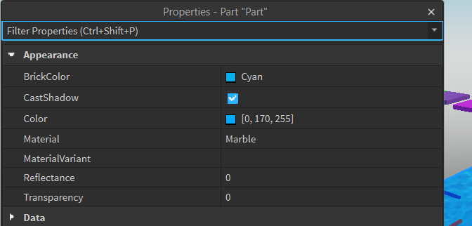
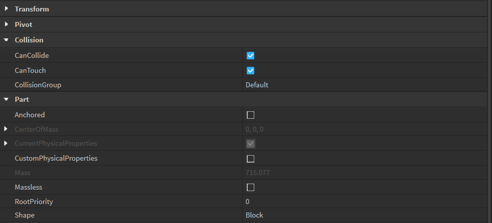
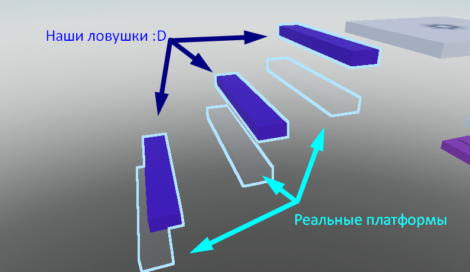
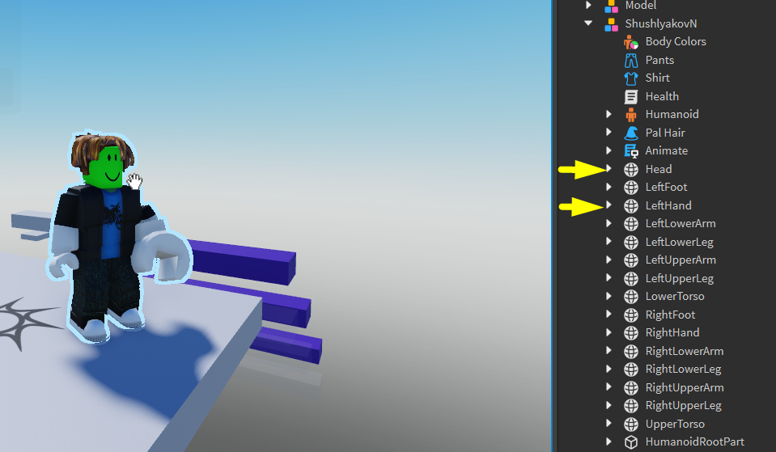
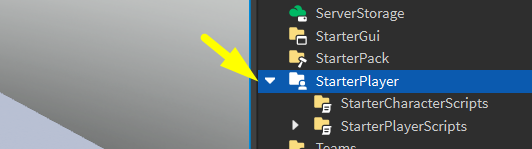
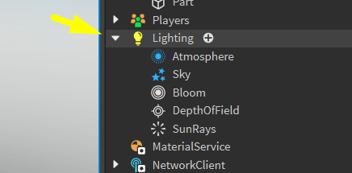
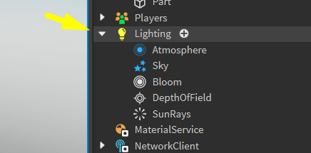

Создание игр в Roblox Studio
Объекты в Roblox. Настройка свойств и параметров.
Сегодня мы научимся настраивать различные игровые объекты, а именно настраивать внешний вид, свойства персонажа и освещение карты.
Объекты и их свойства
Чтобы настроить свойства объектов, нам понадобится окно Properties (свойства).
Любой компонент, который создается в Roblox - это предварительно написанные уникальные объекты, которые формируются и работают различным образом в зависимости от своих настроек. Эти. настройки - свойства объектов - присваиваются им при создании, либо в окне Properties во время работы с ними в сцене.
Научиться работать со свойствами очень важно, так как всё программирование в Roblox построено на изменении параметров объектов и связи их друг с другом.
Объект блок и его свойства
Первый и самый очевидный объект, настройки которого нужно посмотреть - это блок. Создадим один блок, разместим его в конце уровня. Выделим блок и обратим внимание на окно Properties.
Настройка внешнего вида
- BrickColor - отображает плашку и название выбранного цвета. При нажатии откроется палитра цветов, кнопке Color на верхней панели, нос одним важным отличием - цвет будет изменяться в реальном времени, таким образом намного легче подбирать нужный оттенок.
- CastShadow - включает или выключает отбрасывание теней деталью.
- Color - более точная настройка цвета. Представляет из себя стандартное представление цвета в формате НЗ - квадрат с оттенком и насыщенностью и ползунок яркости справа. Также этот вид можно открыть из параметра BrickColor нажатием на кнопку More Colors
- Material - выводит список материалов и дублирует аналогичную настройку в верхнем меню.
- Reflectance - изменяет то, насколько сильно материал преломляет свет и цвет от неба, Работает только с некоторыми материалами (Plastic, Smooth Plastic, Glass).
- Transparency - изменяет прозрачность детали. Изменяется от 0 до 1: - это
представление процентов в программировании. 0 = 0%s, 1 = 100%, 0.37 = 37%,
и т.д.
С помощью этого параметра далее будут создаваться блоки-ловушки.
Параметры трансформации
Следующие параметры, которые необходимо изучить - параметры трансформации: Position, Orientation и Size.
Все эти параметры состоят из трех отдельных дробных величин и показывают значения по осям - X, Y, Z.
Именно эти параметры будут впоследствии изменяться для анимации объектов и создания движущихся частей.
Параметр Parent
Другой важный параметр - Parent. При нажатии на него курсор изменяется на "выбор объекта" и первый объект, по которому мы кликнем, станет родительским для выбранной детали.
Параметры взаимодействия с внешним миром
Следующая группа отвечает за взаимодействие с внешнем миром.
-
CanCollide - самый важный здесь параметр. Это свойство позволяет
включить или выключить столкновения (коллизии) с другими объектами.
Если он выключен, игрок будет проходить сквозь блок.
Этот параметр также нужен для создания ловушек.
- CanTouch - отвечает за срабатывание событие Touched - с его помощью мы в будущем будем регистрировать столкновения деталей с другими объектами.
- Anchored - отображает «залкорен» (закреплен) ли объект. Дублирует кнопку Anchor.
- Locked - позволяет сделать объект невыбираемым.
Поопрактикуемся!
Создадим ловушку для игрока!
Этапы:
- Создаем 2 платформы в конце уровня
- Одну сделаем видимой, но с отключенным CanCollide
- А вторую почти невидимой, но с включенным CanCollide
- Сделаем так, чтобы игроку было легко запрыгнуть на первую, а вторую разместим ровно под первой
- Спроектируем дорожку из таких "блоков-ловушек"
Свойства персонажей
Помимо настроек деталей, настройки есть у любого другого объекта в игре, в том числе и у игрового персонажа.
Настройка свойств персонажа
Запустим игру, кликнем по персонажу и найдем его элемент в Explorer, поэкспериментируем!
Важно: как только персонаж погибнет, все эти изменения сбросятся - при возрождении создается новая модель игрока, в которой настройки по умолчанию. Чтобы эти настройки применялись по умолчанию, необходимо изменять параметры стартового персонажа.
Компонент Humanoid
В настройках Humanoid находятся все свойства игрока, относящиеся к его характеристикам живого объекта.
Он есть у всех персонажей.
Здесь можно поменять следующие характеристики:
- MaxHealth и Health - максимальное и текущее значение здоровья. Если сделать последнее равным о, персонаж умрет.
- WalkSpeed и JumpHeight - скорость передвижения и высота прыжка.
Эти параметры тоже сбросятся при смерти персонажа. Однако эти свойства можно изменить по умолчанию в окне Explorer в разделе Starter Player
В окне Properties отобразятся те же настройки, и здесь их можно задать таким же образом, чтобы они загружались по умолчанию и сохранялись при проигрыше.
Настройка освещения карты
Теперь мы научимся, как управлять освещением карты. В окне Explorer надо найти вкладку Lighting и выбрать её.
Обратим внимание на Properties..
 

Здесь находятся очень специфические настройки, с которыми нужно быть осторожным:
- Ambient - базовый цвет света вне зависимости от теней. Изменяет глобальный оттенок сцены.
- ColorShift_Top - изменяет оттенок верхних граней объектов.
- GlobalShadows - включает и выключает тени от глобального освещения.
- ShadowSoftness - позволяет сделать для теней более мягкие контуры.
- TimeOfDay - самый интересный параметр! Он позволяет указать, какое сейчас время суток у нас в игре.
Домашкаа 😁
Необходимо самостоятельно попрактиковаться с параметрами объектов, которые были изучены на занятии.
- Создать свой уровень с новыми ловушками
- Придумать дизайн для этого уровня и декорировать его
- Поработать с освещением уровня
- Настроить время суток на раннее утро